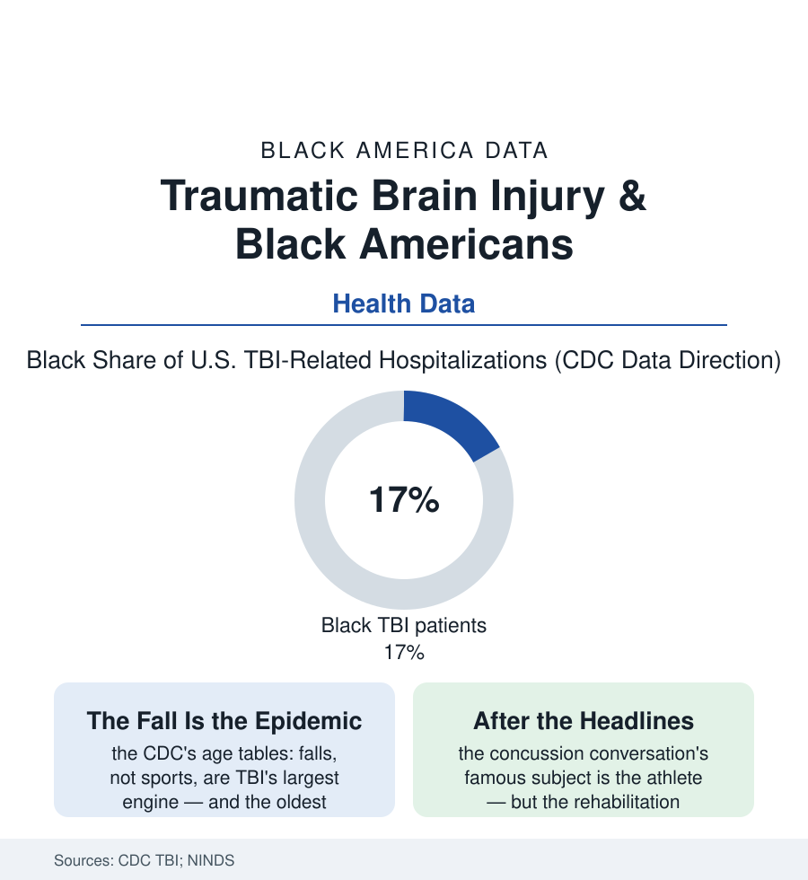

Black Public Health
The Injured Brain: Traumatic Brain Injury's Uneven Map
Traumatic brain injury hospitalizes and kills Black Americans at higher rates — from the playing field to the fall at home — and its long recovery runs through the same gaps as every file here.

Traumatic brain injury is the health file's most mechanical catastrophe: a fall, a collision, a blow — and a brain changed in a second, its consequences unfolding for a lifetime. The CDC's surveillance counts roughly two hundred thousand TBI hospitalizations a year in the recent data, and Black Americans appear in them at rates above their population share, with death rates from TBI among the highest of any group. This article reads the brain-injury file.
The Causes, in the Data's Order
The popular image assigns TBI to the football field, and the CDC's tables correct the picture in the file's first lesson: the leading causes across the population are falls (the aging file's enemy — the older adult's fall from standing height the single largest TBI engine, its outcomes worsened by the blood thinners of the cardiovascular file and the support gaps of the senior data), motor-vehicle crashes (whose rates carry the transportation file's disparities — the road risk sorted by vehicle age, road design, and seat-belt data's geography), and assaults (the injury file's hardest rows, concentrated in the young Black male population the mortality statistics shadow — recorded here as mechanism, in the clinical literature's framing, because the survivor of that mechanism enters the same rehab system as the fallen grandmother). Sports concussions sit inside the totals as the most studied and least typical slice — and even there the data hold the atlas's pattern (the high-school surveillance finding reporting and clearance practices varying by school resources; the collegiate and professional protocols' rigor unavailable to the youth leagues of the underfunded districts; the 'when in doubt, sit them out' era's compliance an enforcement map of athletic-trainer employment — the trainer, per the schools data, absent from a large share of the high schools that need one, their absence concentrated by the funding file's usual coordinates). The military file adds its cohort: the blast-era veterans of the post-2001 wars, Black service members' TBI care running through the VA's dedicated polytrauma system — the one corner of the file where the care architecture was built at national scale on purpose.
The Outcome Gap Is a Rehab Gap
The injury's aftermath is where the disparities compound, and the mechanism is this section's most familiar: the survival itself has improved with trauma care (the trauma-center data showing, in the best systems, outcome equalization at the emergency stage — the golden hour's democracy), after which the recovery file takes over with its full apparatus of divergence — the inpatient rehabilitation admission rates (the discharge crossroads again, TBI patients' routing to specialized brain-injury rehab varying by race and insurance in the outcomes studies), the cognitive rehabilitation and therapies (the speech, occupational, and neuropsychological services whose courses the adherence file's attrition shortens), the disability determination (the SSDI file's long timelines for the worker whose injury ended the earnings file's story), and the family's conscription as the therapy team of last resort — the spouse and mother of the caregiving file, now managing a personality changed by frontal injury with the support the system budgets for a sprain. The long outcomes data state the accumulation plainly: employment at one and five years post-injury, depression and substance-use comorbidity in the follow-up studies, life expectancy's shortened rows — each sorted, in the registries' analyses, by the same variables that sorted the discharge. The prevention rows are the file's forward tense: the helmet and fall-prevention programs' uneven distribution, the vehicle-safety technology arriving first in the new cars the income data ration, the youth-sports protocols' spread — the brain, the file concludes, is injured by physics but its recovery is administered by policy, and policy is the part that can be changed by appropriations committees.
Reading the Brain-Injury Data
TBI is where the health file's themes collide in a single organ: exposure sorted by neighborhood, rescue at its most equal, recovery at its least. The CDC publishes the hospitalizations without commentary. The families who learned neurology in the waiting room — who know what a Glasgow score is and what the rehab bed cost — could annotate the whole long series from memory, which is more than the surveillance system asks of anyone.
More in Black Public Health
Hypertension Among Black Adults: Prevalence, Control, and Consequences
About 55 percent of Black adults have hypertension — the highest rate of any U.S. group. Prevalence, onset, control, and the stroke, heart, and kidney consequences in the data.
Diabetes Among Black Adults: Prevalence and Complications
Nearly one in five Black adults has diabetes, diagnosed or undiagnosed — and its complications fall with particular weight. The CDC data on prevalence, control, and outcomes.
Black Life Expectancy: The Gap at Birth and Its Causes
Black life expectancy at birth is about 73 years, roughly five years below the national figure — the summary measure of every health gap in this section. The CDC data.
Source: Centers for Disease Control and Prevention TBI surveillance data; National Institute of Neurological Disorders and Stroke; Journal of Head Trauma Rehabilitation studies.